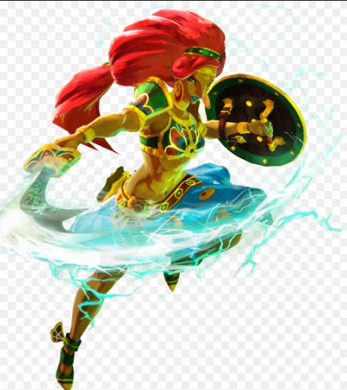
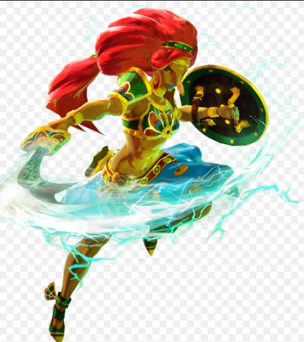

Le peuple Gerudo
Le peuple Gerudo est un peuple de femmes guerrières situé au Sud-Est du Royaume d'Hyrule, dans le Désert Gerudo.
Caractéristiques du peuple Gerudo :
- Peuple de femmes guerrières
- Maîtrise de l'épée
- Style de vie nomade dans le désert
- Utilisez les capacités électriques pour naviguer à travers le donjon.
- Activez les terminaux en utilisant les capacités d'Urbosa.
- Évitez les attaques électriques et les pièges en utilisant votre bouclier et vos compétences de combat.
- Utilisez les capacités électriques pour atteindre le boss.
- Évitez ses attaques électriques en utilisant votre bouclier.
- Attaquez-le avec des flèches et des attaques de mêlée.
Galerie

 

Donjon : Vah Naboris
Le donjon de Vah Naboris est situé dans le Désert Gerudo. Voici comment le battre :
Étapes pour battre Vah Naboris :
Boss : Foudre de Ganon
Le boss du donjon Vah Naboris est la Foudre de Ganon. Voici comment le battre :